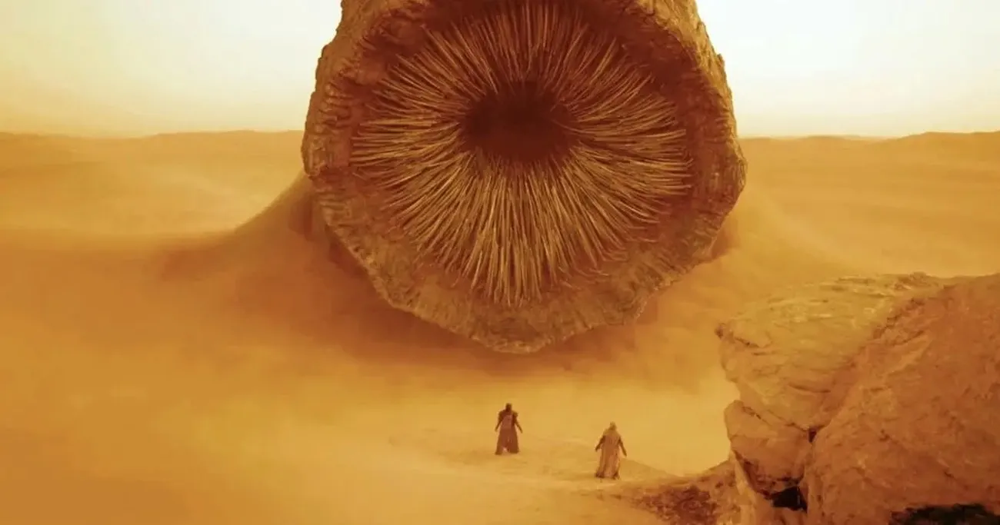
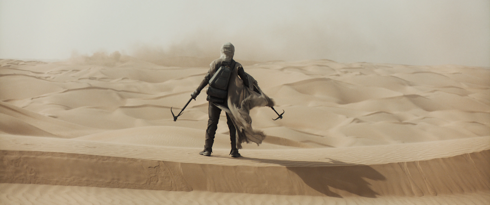
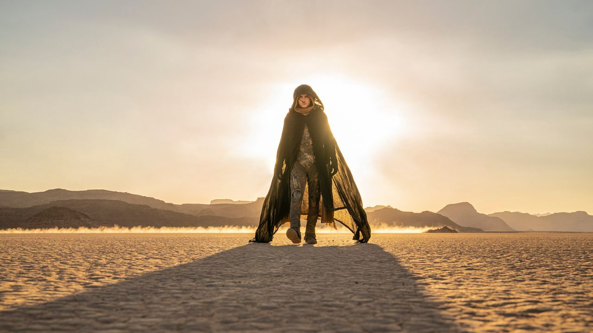
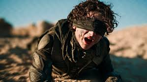
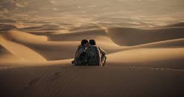

Galería de Imágenes
Una selección visual del impresionante mundo cinematográfico de Dune.






Datos sobre la Producción Visual
- La película fue filmada en locaciones reales en Jordania, Abu Dhabi, Noruega y Budapest.
- El director Denis Villeneuve priorizó los efectos prácticos sobre los digitales siempre que fue posible.
- El diseño de los trajes destiladores (stillsuits) tomó meses de desarrollo.
- Los gusanos de arena fueron creados completamente con CGI, pero su movimiento se basó en estudios de animales reales.
- La paleta de colores varía según la facción: tonos azules y verdes para Caladan, dorados y ocres para Arrakis, y oscuros para los Harkonnen.